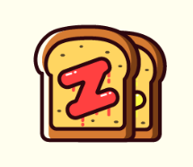
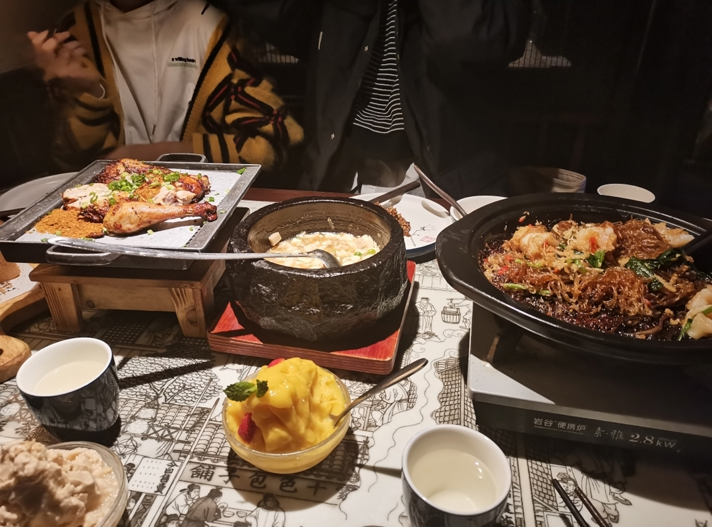

要不断的努力，才能成为更好的自己
娱乐活动
新的服装
方便的设施

唯有美食不可辜负
上大学前，
做着在图书馆抱一堆书洒落一地
然后邂逅一个人的梦；
上了大学才发现，
那种事情一般不会发生。

上大学前， 那时候纯真可爱， 那时候努力认真， 那时候有目标有信仰， 那时候有多少美丽的期盼。 上大学后，梦想是梦想，现实是现实。
当你跨入大学校园之后，你是不是发现其实考上大学的你并没有实现所谓真正意义上的解放。 你需要面对繁重的学业压力； 你需要平衡学习、工作、生活； 你需要思考未来四年如何度过； ...... 学习、交友、社团活动、旅游、恋爱、培养兴趣，处理人际关系，适应大学生活等等，甚至是一张回家的火车票也会让远离家的你费劲周折。 大学那些事儿看起来似乎琐碎无比，但细心品味后也会带给你会心地一笑。无论眼前的大学生活多么“苟且”，也要向着诗和远方。 梦想一定要有的，任何人都应该有，也应该被人们所尊重。正因为渴望，所以想要拥有，才会想办法慢慢走向那个方向。在前进的道路上都会有坑坑洼洼，但要学会左手安慰右手，不断成长自己！
大学是一个新的阶段
时光荏苒，白驹过隙，不知不觉我们从高中步入大学，随之也即将度过大学里的第一个学期， 在这个学期里，我们对大学及其生活也更加了解，也逐渐明白具体的大学生活是什么样的。 在高中时期，我们听过最多的一句话就是，现在你们虽然苦，但等上了大学就轻松了，于是我们憧憬着美好的大学生活， 正是怀着这份美好，这黑夜里的一盏灯，迷茫时的一束光，海洋上的一座塔，支撑着我们度过艰难的高中时光，顺利抵达大学的彼岸。
